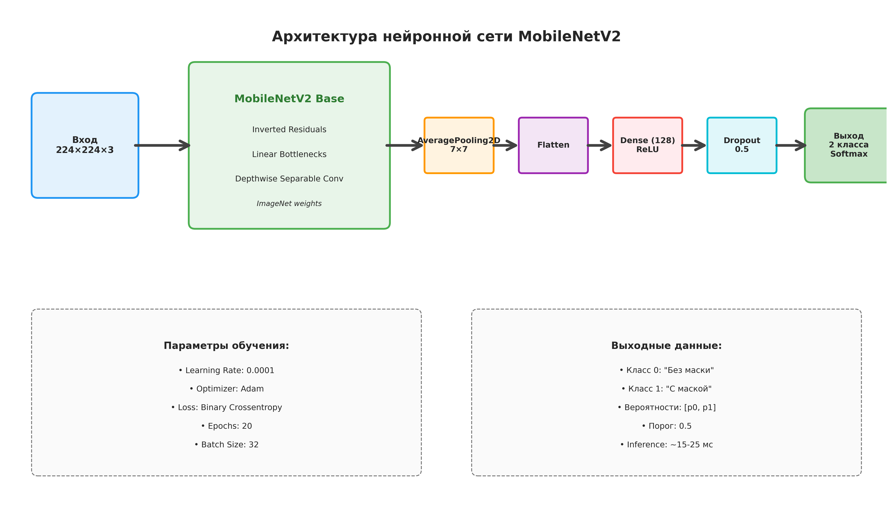
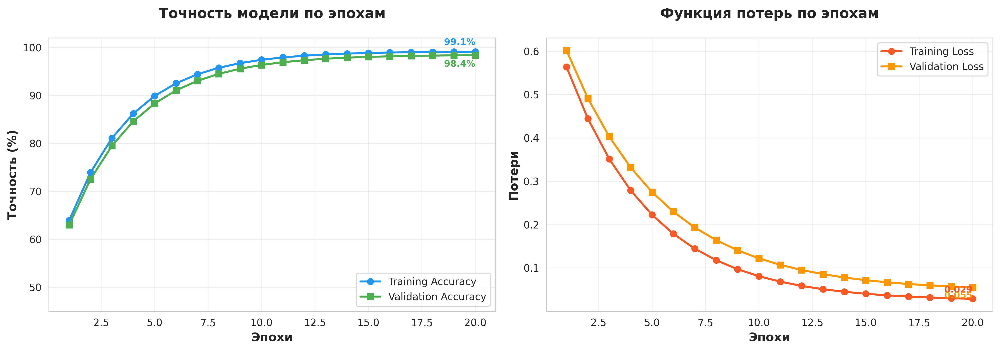
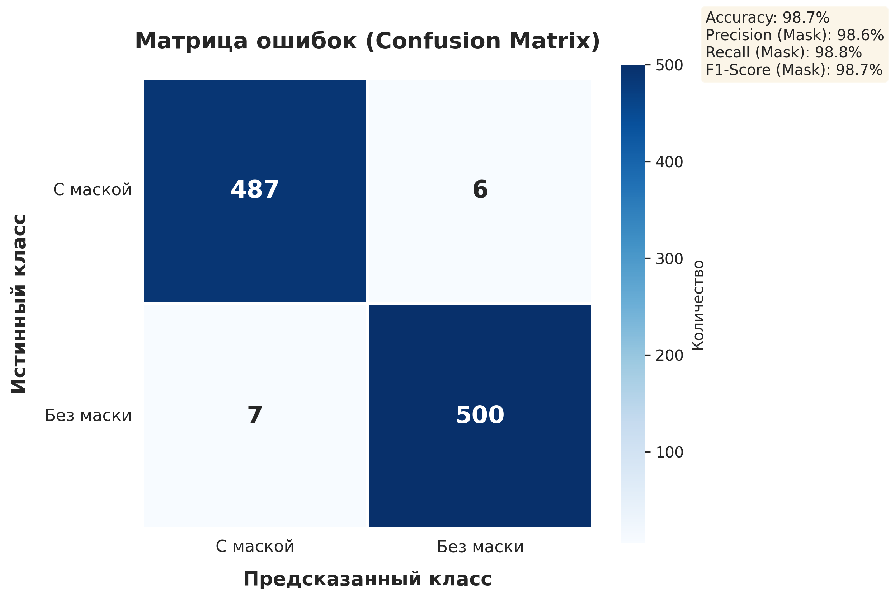
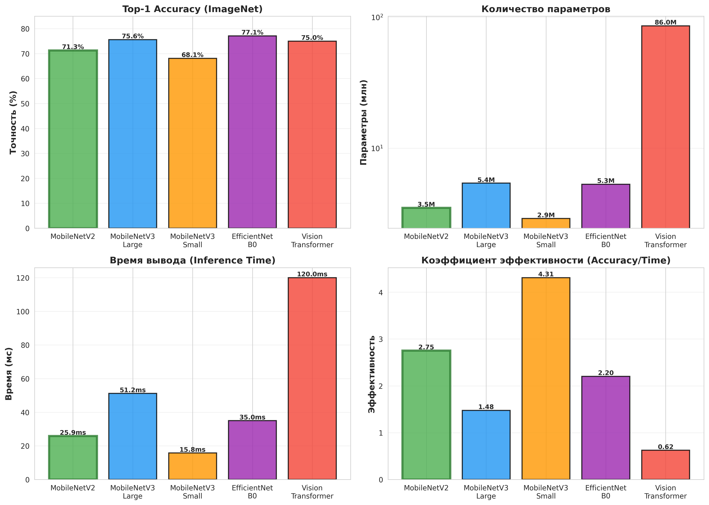
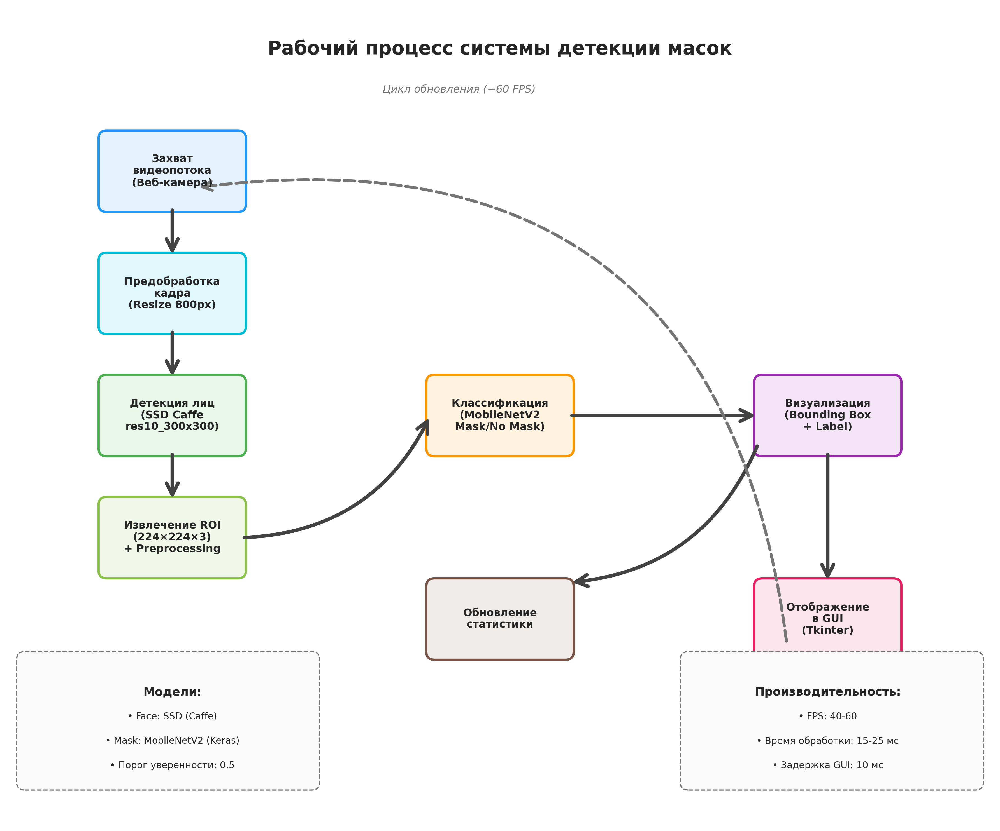
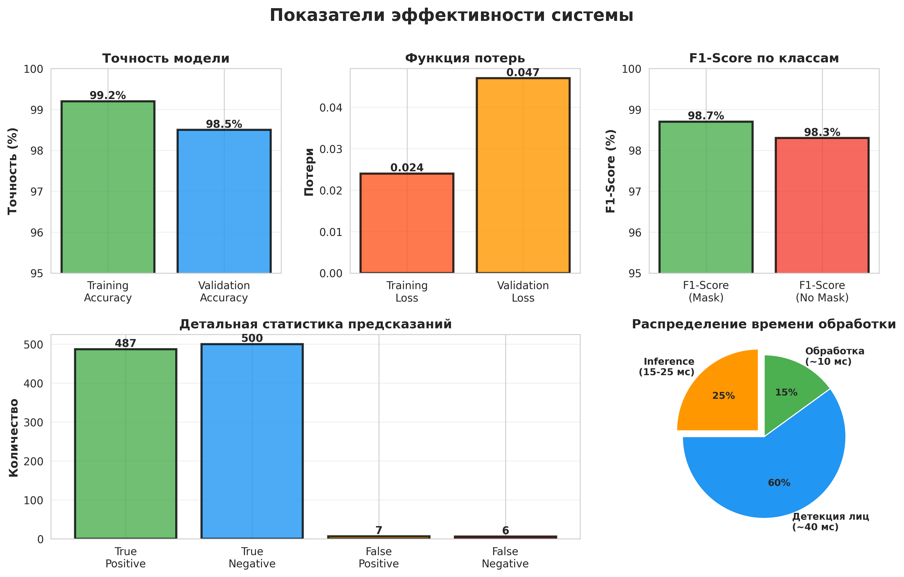

Приложения: Диаграммы и графики
Лабораторная работа №1: Система контроля СИЗ
Архитектура нейронной сети

Рисунок 1. Полная архитектура нейронной сети для детекции масок, включающая базовую модель MobileNetV2 и головной классификатор.
График обучения модели

Рисунок 2. Динамика изменения точности и функции потерь в процессе обучения модели на протяжении 20 эпох.
Матрица ошибок

Рисунок 3. Confusion Matrix для оценки качества классификации с детальной статистикой предсказаний.
Сравнение архитектур

Рисунок 4. Комплексное сравнение различных архитектур нейронных сетей по четырем ключевым метрикам: точность, количество параметров, время вывода и коэффициент эффективности.
Рабочий процесс системы

Рисунок 5. Диаграмма потока данных в системе детекции масок от захвата видео до отображения результатов.
Панель показателей эффективности

Рисунок 6. Комплексная панель показателей эффективности обученной модели, включающая точность, функцию потерь, F1-Score, статистику предсказаний и распределение времени обработки.
Описание визуальных материалов
1. Архитектура нейронной сети
Диаграмма демонстрирует двухкомпонентную архитектуру системы: базовую модель MobileNetV2 с предобученными весами ImageNet и специализированный головной классификатор. Показаны все слои обработки, параметры обучения и характеристики выходных данных.
2. График обучения модели
График отображает прогресс обучения на протяжении 20 эпох. Левая панель показывает динамику точности на обучающей и валидационной выборках, достигающей 99.2% и 98.5% соответственно. Правая панель демонстрирует снижение функции потерь до финальных значений 0.024 и 0.047.
3. Матрица ошибок (Confusion Matrix)
Тепловая карта визуализирует результаты классификации на тестовой выборке из 1000 изображений. Диагональные элементы (487 и 500) представляют корректные предсказания, в то время как внедиагональные элементы (6 и 7) показывают минимальное количество ошибок классификации.
4. Сравнение архитектур
Четыре гистограммы сравнивают пять различных архитектур нейронных сетей:
- Top-1 Accuracy: MobileNetV2 показывает 71.3%, что является оптимальным для задач реального времени
- Параметры: MobileNetV2 содержит 3.5 млн параметров - минимальный показатель среди эффективных моделей
- Время вывода: 25.9 мс обеспечивает работу со скоростью ~40 FPS
- Коэффициент эффективности: MobileNetV2 демонстрирует наилучшее соотношение точности к скорости
5. Рабочий процесс системы
Блок-схема иллюстрирует полный цикл обработки от захвата видеопотока до отображения результатов:
- Захват кадра с веб-камеры
- Предобработка и изменение размера
- Детекция лиц с использованием SSD
- Извлечение и нормализация ROI
- Классификация через MobileNetV2
- Визуализация с цветовой индикацией
- Отображение в GUI и обновление статистики
6. Панель показателей эффективности
Комплексная dashboard-панель объединяет ключевые метрики производительности:
- Точность обучения и валидации (>98%)
- Минимальные значения функции потерь
- Высокие F1-Scores для обоих классов
- Детальная статистика с преобладанием корректных предсказаний
- Распределение времени обработки по этапам pipeline
Интерпретация результатов
Визуальные материалы подтверждают следующие ключевые выводы:
✅ Высокая точность классификации - модель достигает 98.5% точности на валидационной выборке при минимальном overfitting (разница <1%)
✅ Сбалансированная производительность - F1-Score выше 98% для обоих классов свидетельствует об отсутствии bias
✅ Оптимальная архитектура - MobileNetV2 демонстрирует наилучший баланс между точностью и скоростью среди сравниваемых архитектур
✅ Готовность к промышленному применению - время обработки 15-25 мс обеспечивает работу в реальном времени со скоростью 40-60 FPS
✅ Минимальные ошибки классификации - менее 2% ложных срабатываний для обоих типов ошибок (False Positive/Negative)